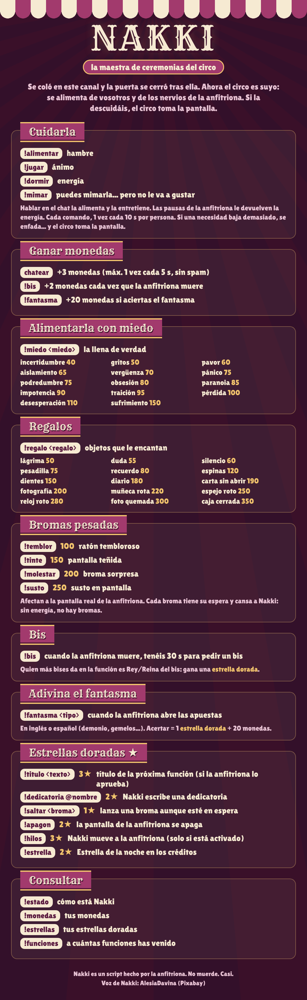
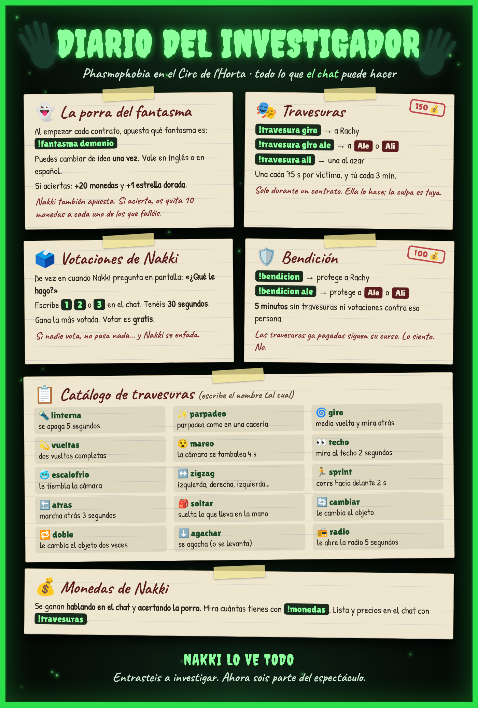
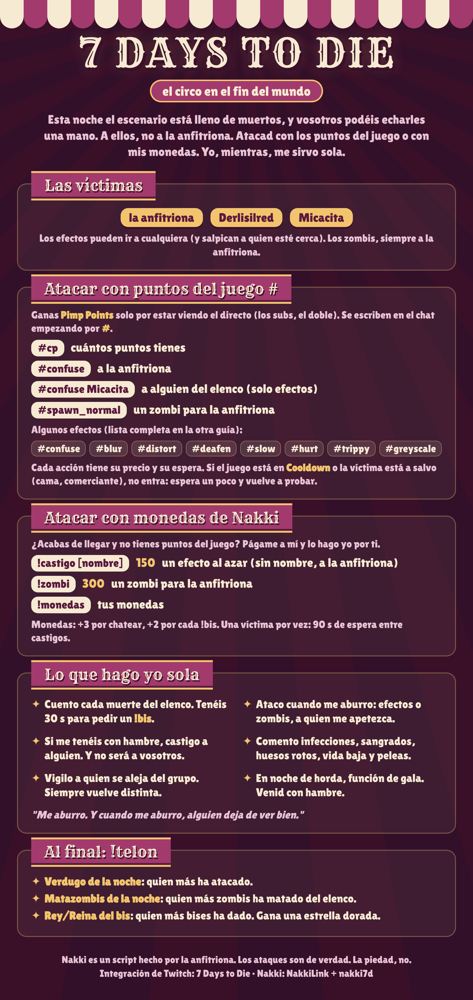
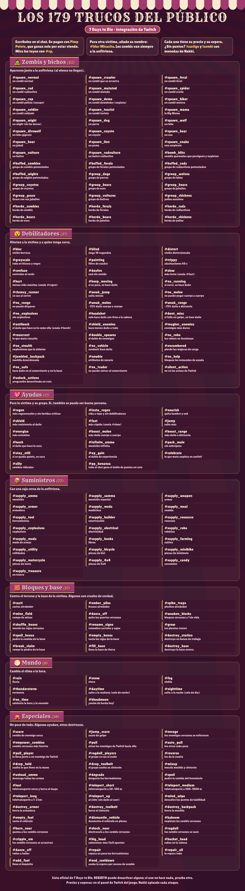

1¿Quién es Nakki?
Nakki es la maestra de ceremonias del canal.
Encontró mi canal abandonado, en desuso, entró... y la puerta se cerró tras ella. Ahora el circo es suyo.
Se alimenta de vosotros (vuestra atención y emociones, sobre todo las negativas) y de los nervios, la rabia y el miedo de la anfitriona (aka yo). Si la descuidamos, se enfada, y cuando se enfada el circo toma la pantalla 🎭: pantalla tintada, gifs, sonidos... todo para impedir que vea bien lo que hago en el juego.
2Juega con Nakki
Nakki tiene comandos básicos compartidos entre juegos. «Adivina el fantasma» es una modalidad del Phasmophobia y se explica más abajo.

3Nakki en Phasmophobia
Cuando juego al Phasmophobia, Nakki tiene una modalidad específica con comandos nuevos.
Cada vez que entramos en una casa nueva, abro sesión con !contrato y Nakki abre la porra para que cada uno apueste qué fantasma es. Si aciertas, te llevas +20 monedas y +1 estrella dorada. Nakki también apuesta al azar al abrir la porra: si acierta, os quita 10 monedas a cada uno de los que hayáis fallado.
¡También puede fastidiarnos a mis colegas y a mí con travesuras! Hay comandos para que podáis ayudarla (o protegernos). Los precios pueden ir cambiando según funcionen mejor o peor; iré actualizándolo aquí.

4Nakki en 7 Days to Die
Como en el Phasmophobia, también hay comandos específicos para el 7D2D. Además, solemos jugar con la integración de Twitch que ofrece el juego, que también está conectada con Nakki.

Estos son los comandos de la integración de Twitch. También los podéis encontrar online, pero los dejo aquí para que esté todo en el mismo sitio.

Jugamos con el mod REBIRTH y tres mods hechos por mí (quizás algún día los publique):
5Nakki en los soulslike
En Remnant 2, Dark Souls II y Lords of the Fallen, Nakki trae la ruleta del infortunio 🎡. De vez en cuando (cada 30-40 minutos) gira una ruleta en pantalla que decide quién elige el arma, la armadura o las dos:
En el Crimson Moon no hay ruleta: el juego funciona de forma un poco rara y no encaja.
6Nakki en otros juegos
En el resto de juegos (RuneScape: Dragonwilds, etc.), Nakki sigue contando las muertes (y los sustos cuando toca), y los comandos básicos funcionan (tintar la pantalla, gifs, sonidos...). De momento solo pueden afectarme a mí, pero iré añadiendo opciones para que también se puedan usar con mis compañeras.
7Nakki en The Sims 4
Estoy trabajando en un mod en el que Nakki controla un Sim (en solitario o viviendo con el mío) mientras oímos sus pensamientos y por qué decide hacer ciertas cosas. Todo en local, usando solo los recursos de mi portátil. Aún está en desarrollo (soy nueva en esto de moddear los Sims).